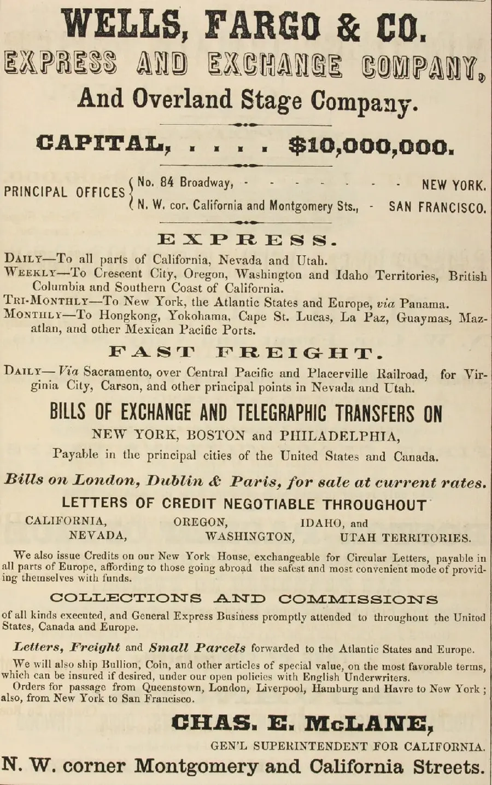
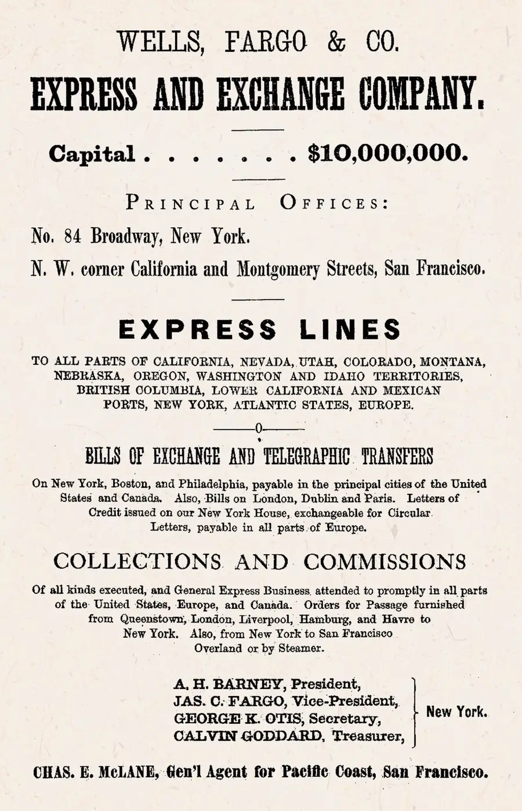
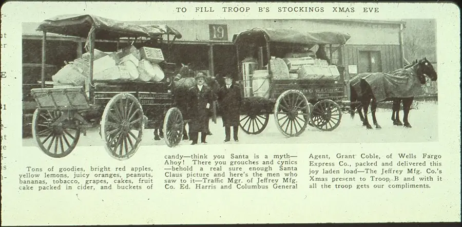

웰스 파고 Wells Fargo
웰스 파고(Wells Fargo)는 예금, 주택 융자, 데빗 카드 등 은행 업무를 제공하며 미국 전역에 자회사를 둔 다국적 금융 서비스 기업이다.
최종 업데이트

웰스 파고는 어떤 브랜드인가
웰스 파고는 미국 샌프란시스코에 본사를 두고 미국 전역의 여러 자회사를 통해 금융 서비스를 제공한다. 자산 기준으로 미국에서 네 번째로 큰 은행이며 뱅크 오브 아메리카, 시티그룹, JP모간 체이스와 함께 미국의 4대 은행에 속한다.
예금, 주택 융자 서비스와 데빗 카드 기준으로는 미국에서 두 번째로 큰 은행이다. 주요 분기점은 사우스다코타주 수폴스에 주 사무소를 둔 웰스 파고 뱅크 N.A.이다.
2007년 미국 은행 가운데 유일하게 S&P의 AAA 등급을 받았으나 세계 금융 위기에 들어서면서 AA-로 하향됐다.
웰스 파고는 어떻게 시작되고 성장했나
헨리 웰스와 윌리엄 G. 파고는 캘리포니아주에 금융 서비스를 제공하기 위해 1852년 웰스 파고 앤드 컴퍼니를 설립했다.
현재의 회사는 1998년 미니애폴리스의 노웨스트사와 원래 회사가 합병한 결과물이다. 회사는 크로커 내셔널 뱅크, 퍼스트 인터스테이트 밴콥, 알래스카 국립 은행과 퍼스트 시큐리티 코퍼레이션 등을 인수하며 사업을 확대했다.
2008년에는 와코비아 코퍼레이션을 인수했고, 이후 보험 서비스와 증권 관련 기업 및 지분도 인수했다.
웰스 파고의 브랜드 아이덴티티는 무엇인가
미국 4대 은행 가운데 하나로서 예금, 주택 융자와 데빗 카드 분야에서 큰 사업 규모를 보유한 종합 금융 서비스 기업이다.
웰스 파고의 대표 제품과 서비스는 무엇인가
웰스 파고의 주요 사업은 예금, 주택 융자 서비스와 데빗 카드 등 개인 및 기업을 대상으로 한 금융 서비스이다. 주된 은행 조직인 웰스 파고 뱅크 N.A.를 중심으로 미국 전역의 자회사와 함께 사업을 운영한다.
기업 인수를 통해 개인 신탁 업무, 건설 금융, 보험 서비스와 증권 관련 영역을 편입했다. 크로커 내셔널 뱅크, 퍼스트 인터스테이트 밴콥, 와코비아 코퍼레이션 등 여러 은행과 금융회사의 인수도 사업 구성 확대에 활용했다.
웰스 파고는 지금 어떤 상태인가
웰스 파고는 샌프란시스코에 본사를 두고 미국 전역에 여러 자회사를 보유한 다국적 금융 서비스 기업이다. 자산 기준 미국 4위 은행이며 예금, 주택 융자 서비스와 데빗 카드 기준으로는 2위이다.
2016년에는 허위계좌 개설, 비정상적 수수료 청구와 신용 남용 제공 혐의로 소비자금융보호국의 소송 대상이 됐다.
웰스 파고 로고는 어떻게 변해왔나
시기는 위키데이터 로고 기간 또는 위키미디어 커먼즈 파일 정보 기준입니다. 이미지를 누르면 원본 파일과 라이선스를 볼 수 있습니다.
사진으로 보는 웰스 파고의 역사



자주 묻는 질문
웰스 파고는 어느 나라 브랜드인가요?
웰스 파고는 미국의 금융 브랜드입니다.
웰스 파고는 언제 설립되었나요?
웰스 파고는 1852년 설립되었습니다.
웰스 파고의 브랜드 아이덴티티는 무엇인가요?
미국 4대 은행 가운데 하나로서 예금, 주택 융자와 데빗 카드 분야에서 큰 사업 규모를 보유한 종합 금융 서비스 기업이다.
웰스 파고의 대표 제품은 무엇인가요?
웰스 파고의 주요 사업은 예금, 주택 융자 서비스와 데빗 카드 등 개인 및 기업을 대상으로 한 금융 서비스이다.
웰스 파고는 현재 어떤 상태인가요?
웰스 파고는 샌프란시스코에 본사를 두고 미국 전역에 여러 자회사를 보유한 다국적 금융 서비스 기업이다.
웰스 파고의 창업자는 누구인가요?
웰스 파고의 창업자는 Henry Wells, William Fargo입니다(위키데이터 기준).
웰스 파고의 본사는 어디에 있나요?
웰스 파고의 본사는 샌프란시스코에 있습니다(위키데이터 기준).
출처와 검증
웰스 파고 관련 참고: 공식 웹사이트 · 위키데이터 Q744149 · 한국어 위키백과 · 영어 위키백과. 브랜드명은 한글과 원어를 함께 표기하되 데이터에 없는 표기는 만들지 않습니다. 기원 국가·설립연도는 검수된 정의문에서 확인된 값을 우선하고, 없을 때만 공식 웹사이트 URL이 일치하는 위키데이터 개체의 값을 씁니다. 탄생일의 월·일은 위키데이터, 위키백과 정보상자, 본문 가운데 같은 연월로 확인되는 값만 싣고, 출처끼리 다르면 싣지 않습니다. 웹 첫 보관은 인터넷 아카이브가 공식 사이트 첫 화면을 처음 보관한 날로, 사이트 개설일과 다를 수 있습니다. 연 매출은 미국 증권거래위원회(SEC)에 제출된 연차 보고서(10-K)의 XBRL 값이며 달러 금액을 반올림했습니다. 위키데이터 값은 2026-09-12 기준입니다.